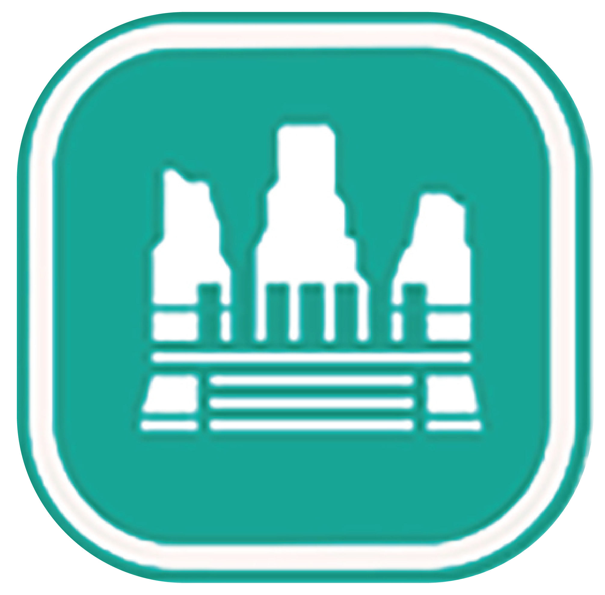
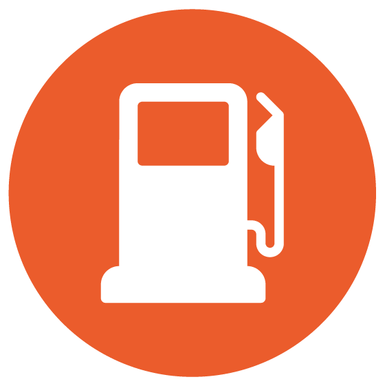
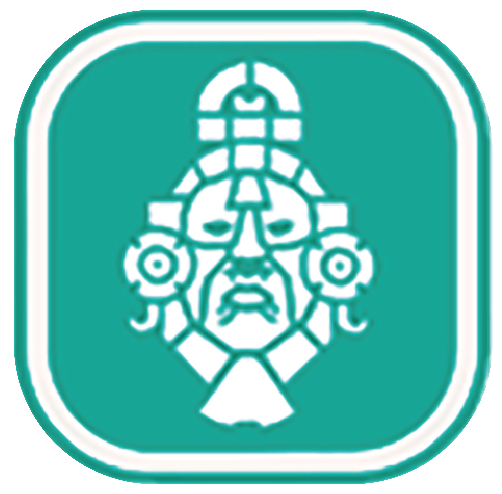

Mapa Interactivo de Ecoaldea Tanaj
LEYENDA
Atractivos
 Atrativos
 Zonas Arqueológicas
Ecoaldea
 Ecoaldea
Servicios
Servicios
Transporte
Transporte
Líneas
Camino a la Zona Arqueolóica de Calakmul
Carretera Champotón-Escárcega
Carretera Escárcega-Chetumal
Trazo Tren Maya
📍